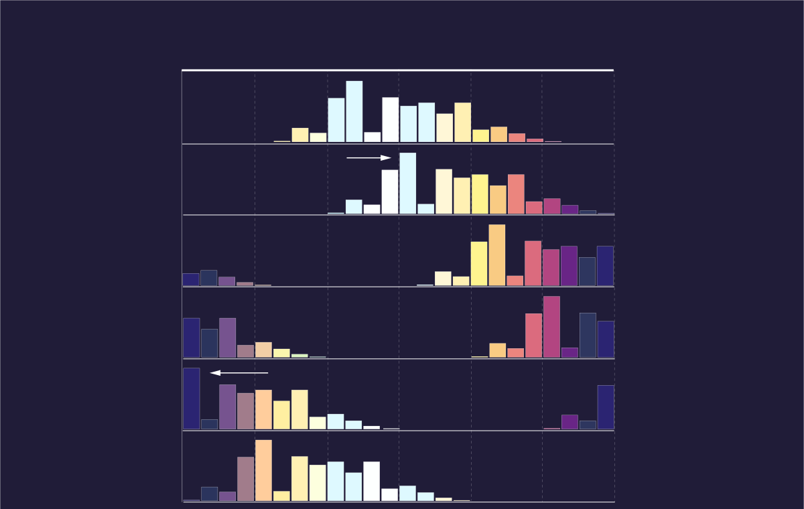
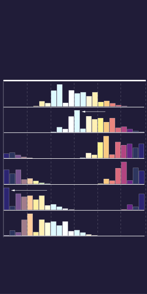
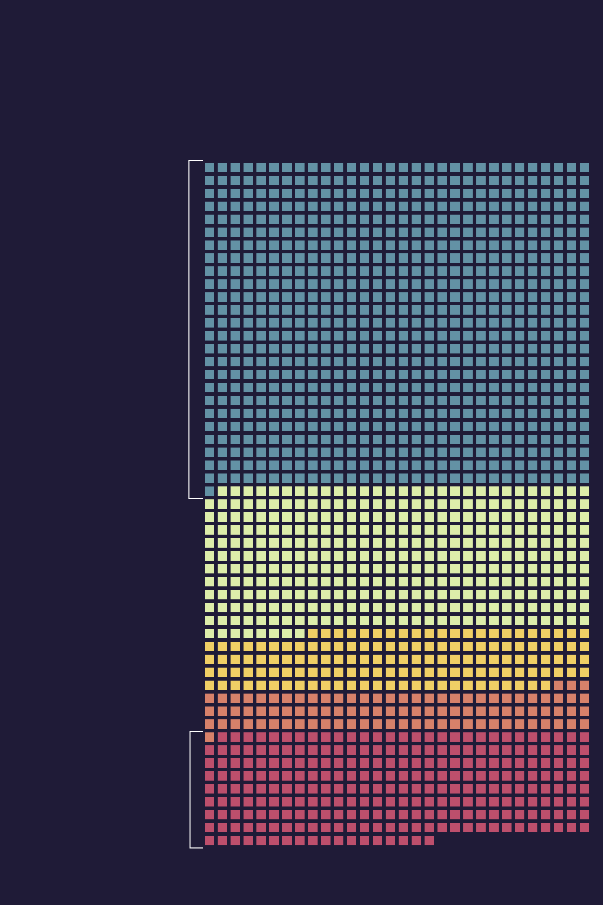
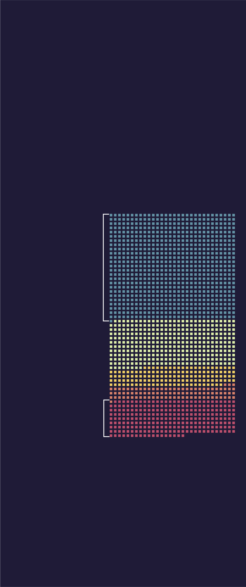

As the COVID-19 pandemic unfolded, universities across the nation raced to draw up plans to support a largely remote semester. For Columbia, this was no easy feat, especially considering that international students—many of whom returned to their home countries at the onset of the pandemic—make up 18% of the undergraduate population at Columbia. With students scattered across more than 115 countries and a wide variation of time zones, schedules that work for those in China (GMT+8) are bound to be a problem for those in France (GMT+2).

The distribution of undergraduate classes in Spring 2021 varies drastically across different timezones
Bar heights represent the number of classes ending within that hour
Number of classes peak at noon in New York time
This peak occurs at midnight for those in Bangkok

The distribution of undergraduate classes in Spring 2021 varies drastically across different timezones
Bar heights represent the number of classes ending within that hour
Number of classes peak at noon in New York time
This peak occurs at midnight for those in Bangkok

The distribution of undergraduate classes in Spring 2021 varies drastically across different timezones
Number of classes peak at noon
This peak shifts to midnight
Bar heights represent the number of classes ending within that hour
International students, however, are not evenly distributed across all 24 time zones. According to data from Columbia’s International Students and Scholars Office, 44 percent of international students are from China, South Korea, India, Singapore, Hong Kong, Thailand, Japan, Vietnam, the Philippines, and Taiwan. For these students, taking classes from their home countries during the pandemic means that less than 20 percent of the undergraduate courses offered during the fall 2020 semester would occur between 9 a.m. and 9 p.m. for them.

There were 1578 undergraduate students in Fall 2019 with international passports
Only 16.2 percent of international
students were from time zones
where more than 80 percent of
undergraduate classes offered in
the fall 2020 semester occurred
between 9 a.m. and 9 p.m. local
time
47.6 percent of international students were from
time zones where less than 20 percent of undergraduate
classes in the fall 2020 semester occurred between
9 a.m. and 9 p.m. local time
Most-represented passports: China, South Korea, India, Singapore,
Hong Kong, Thailand, Japan, Vietnam Philippines, Taiwan
Most-represented passports:
Canada, Brazil, Mexico
Source: Columbia University International Students and Scholars Office; Barnard College not reported

There were 1578 undergraduate students in Fall 2019 with
international passports
47.6 percent of
international students
were from time zones
where less than 20
percent of undergraduate
classes offered in the
fall 2020 semester
occurred between 9 a.m.
and 9 p.m. local time
Most-represented
passports: China,
South Korea, India,
Singapore, Hong Kong,
Thailand, Japan,
Vietnam, Philippines,
Taiwan
Only 16.2 percent of international
students were from time zones
where more than 80 percent of
undergraduate classes offered in
the fall 2020 semester occurred
between 9 a.m. and 9 p.m. local
time
Most-represented passports:
Canada, Brazil, Mexico
Source: Columbia University International Students and Scholars Office;
Barnard College not reported

There were 1578 undergraduate
students in Fall 2019 with
international passports
47.6 percent of international
students were from time zones
where less than 20 percent of
undergraduate classes offered
in the fall 2020 semester occurred
between 9 a.m. and 9 p.m. local time
Most-represented
passports: China,
South Korea, India,
Singapore, Hong Kong,
Thailand, Japan,
Vietnam, Philippines,
Taiwan
Most-represented
passports: Canada,
Brazil, Mexico
Only 16.2 percent of international
students were from time zones
where more than 80 percent of
undergraduate classes offered in
the fall 2020 semester occurred
between 9 a.m. and 9 p.m. local
time
Source: Columbia University International Students and Scholars
Office; Barnard College not reported
Returning to campus for the fall 2020 semester was not an option for many of these students. On July 6, 2020, the Student and Exchange Visitor Program under the Trump administration banned international students from entering or remaining in the United States if they had a “fully online course load.” Although Trump revoked these exemptions eight days later following external pressure initially generated by a lawsuit submitted by Harvard and MIT, international students continued to face barriers from entering the United States.
While continuing students with fully online course loads were able to remain in the United States, nonimmigrant students in “new” or “initial” status were still restricted from entering the country with a fully online course schedule for fall 2020.
The suspension of non-immigrant visa services in many embassies and consulates during the pandemic also meant that new international students and continuing students who needed visa renewals were unable to proceed with their visa applications. Some embassies have slowly resumed non-immigrant services. However only those in Korea and the Philippines did so before Columbia’s fall semester began. Services in China remain suspended as of publication, and the Department of State is still unable to provide a specific date as to when each embassy will resume all services.
There is an additional challenge for those who possess functioning student visas in China, Iran, the European Schengen area, the United Kingdom, the Republic of Ireland, Brazil, and South Africa: Presidential proclamations have suspended entry into the United States of noncitizens who have been to these locations anytime within the 14 days prior to their attempted entry. As such, these international students must stop by a third country for at least 14 days before they are allowed into the United States.
Besides the myriad of travel restrictions international students face, these students must also continue to cope with disrupted circadian rhythms. With these changes come a host of potential health issues. Studies have shown that alterations in daily routine, such as modifying one’s sleep schedule in order to accommodate a time difference, can harm one’s physical and mental health. A broken sleep pattern can result in poor study efficiency as well as negative mood changes and fatigue.
As the pandemic continued, Barnard’s Registrar’s Office and Columbia’s Core Office made efforts to help international students attend their classes. At the end of the fall 2020 semester, Barnard surveyed its students on which classes they intended to take in the upcoming spring semester and how important those classes were to them. The School of Engineering and Applied Science and the School of General Studies have not distributed surveys nor offered petition options.
Because Barnard’s survey was released with the aim of providing feedback to the college when planning for the spring 2021 semester, many international students expected the college to accommodate their living in different time zones. However, for Katya Reichert, a Barnard first-year who spent the fall semester studying from the Philippines, the scheduled times of the top two courses that she indicated—Introduction to Art History II and Data Structures in Java—remained the same. “I don’t know if [the survey] was performative, or if not enough people chose the classes that I chose,” Reichert said.
Meanwhile, international students taking mandatory Core classes also saw fruitless outcomes in the Core office’s effort to accommodate their time zones. In August, the Center for the Core Curriculum gave all students who were enrolled in Contemporary Civilization, Art Humanities, and/or Music Humanities the opportunity to petition for a new section if their current section met between 10 p.m. and 7 a.m. in their local time zone. However, when Kevin Sun Park, who was enrolled in Columbia College as a sophomore in fall 2020, requested to switch out of his Contemporary Civilization section that was scheduled for 4 a.m. in Seoul, his petition was rejected by the Core Office.
“I never doubted that I wouldn’t be able to switch to another section,” Park explained. “Because I would have been taking classes from 4 a.m. to 6 a.m. In what kind of world would a university force me to do classes at that time?”
Professors have taken their own initiatives to ease the difficulty of taking classes at unnatural hours, such as allowing asynchronous attendance, offering international-friendly office hours, and scheduling alternative exam times. Last fall, Columbia’s Center for Teaching and Learning also published a guideline for asynchronous teaching across time zones.
However, the University still does not require professors to allow asynchronous attendance, meaning some students are still required to make the choice between academics, health, relationships, and extracurricular interests.
Considering University President Lee Bollinger’s announcement of a three-semester plan, fall 2020 and spring 2021 are no longer representative of the full course offerings for the 2020-21 school year. As of publication, summer 2021 course offerings have not been updated for all departments. It is still unknown if the summer semester will be a chance for international students to have a healthier and more inclusive academic life amid an ongoing pandemic.
Until then, international students recognize the difficulties in accommodating all time zones. “There’s a limit to what they [the University] can do,” Whitney Deng, a Barnard first-year currently studying from Hong Kong, noted.
However, they still express frustration with what they feel is the little accommodation they are currently receiving: “We are staying up every single night for an entire year, with little to no support from the school,” Deng said. “[International students] are such a small population. So who cares about us?”
Jun Yi Zhang is a Graphics deputy editor. She can be contacted at junyi.zhang@columbiaspectator.com.
Melissa Wang is a Graphics reporter. She can be contacted at melissa.wang@columbiaspectator.com.
Michelle Xu is a Graphics reporter. She can be contacted at michelle.xu@columbiaspectator.com.
Jessica Li is the Graphics editor. She can be contacted at jessica.li@columbiaspectator.com.
Interactives were made with the help of Hong Sen Du, Head of Newsroom Development. He can be contacted at hongsen.du@columbiaspectator.com.